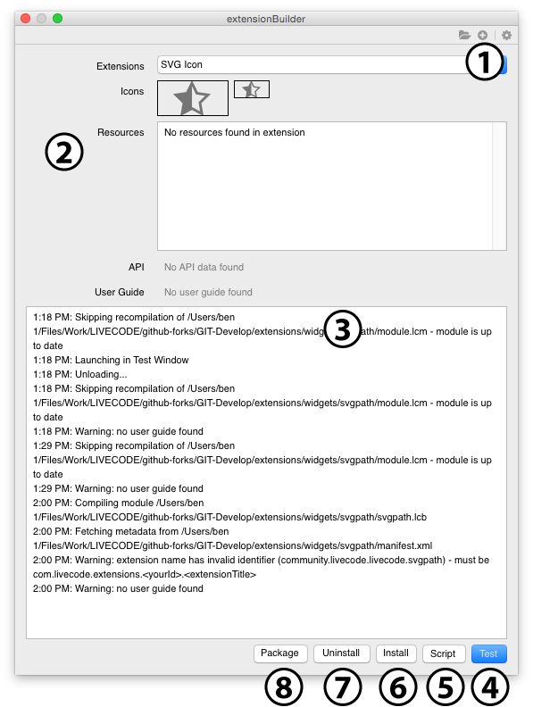
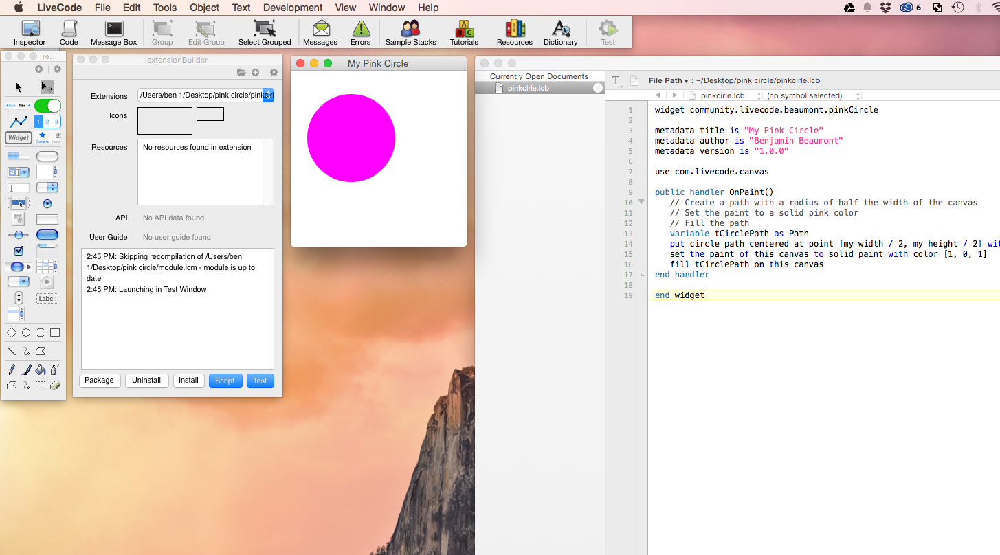
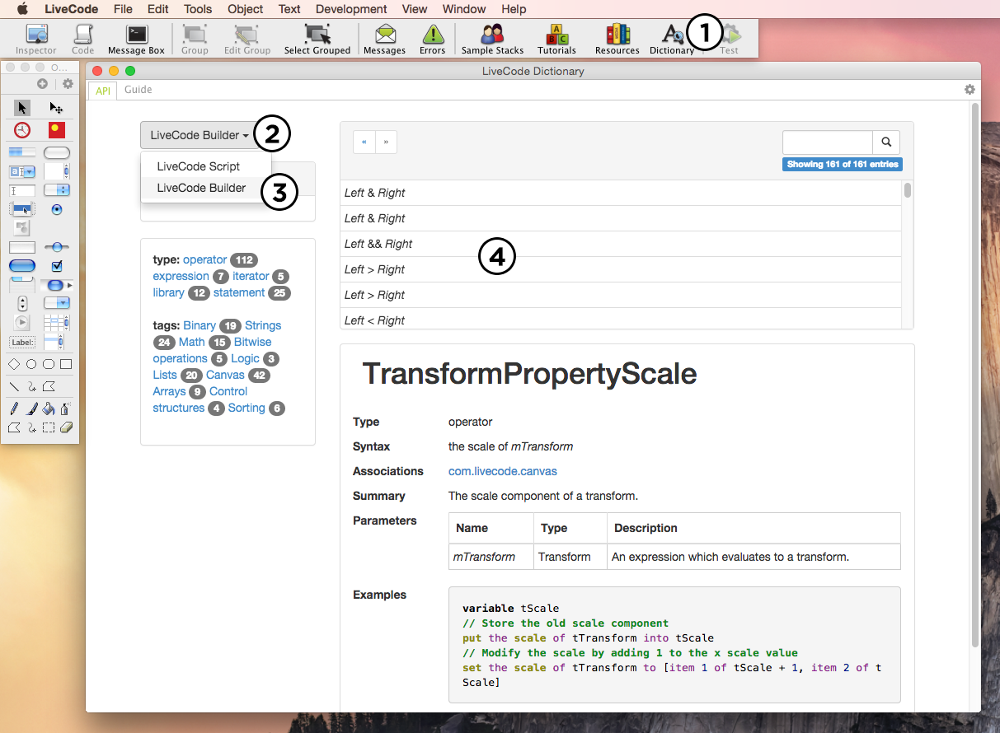
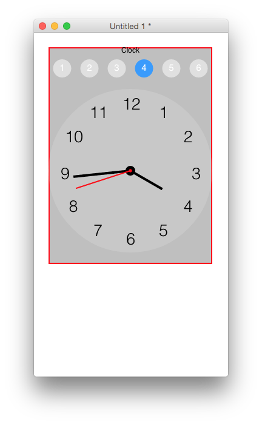
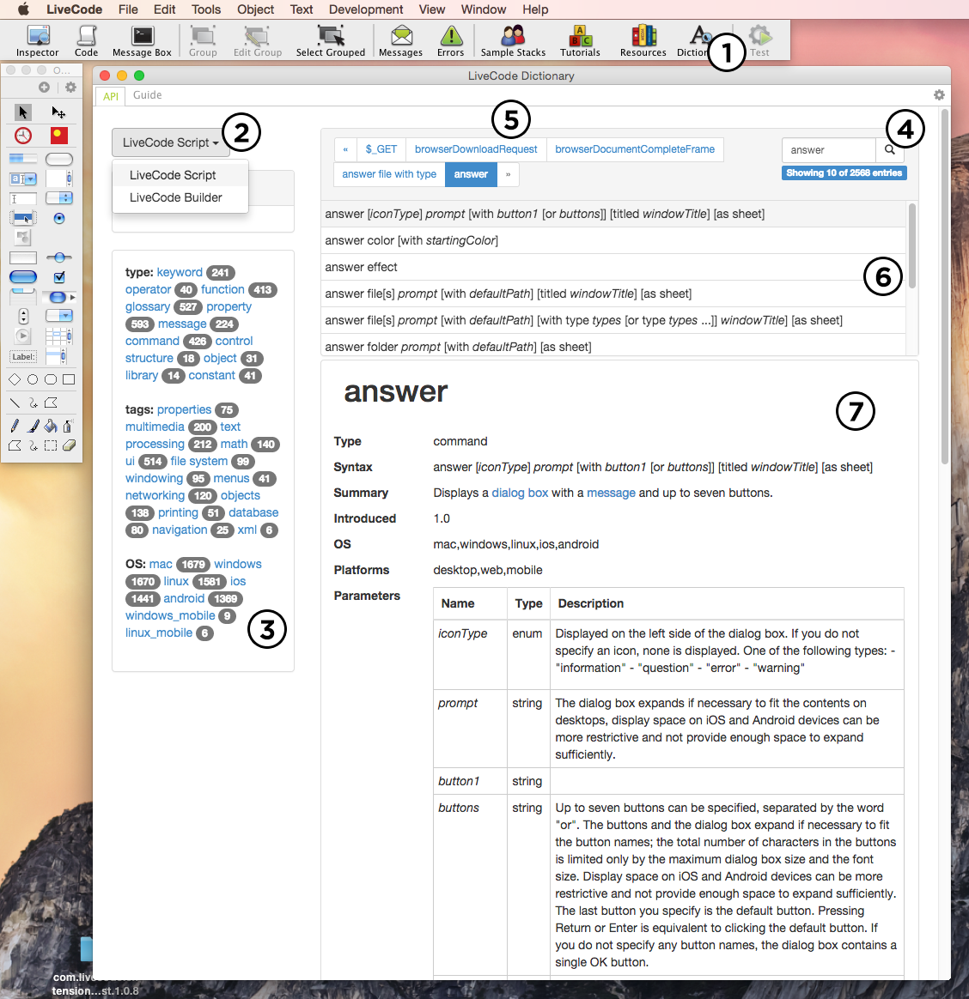
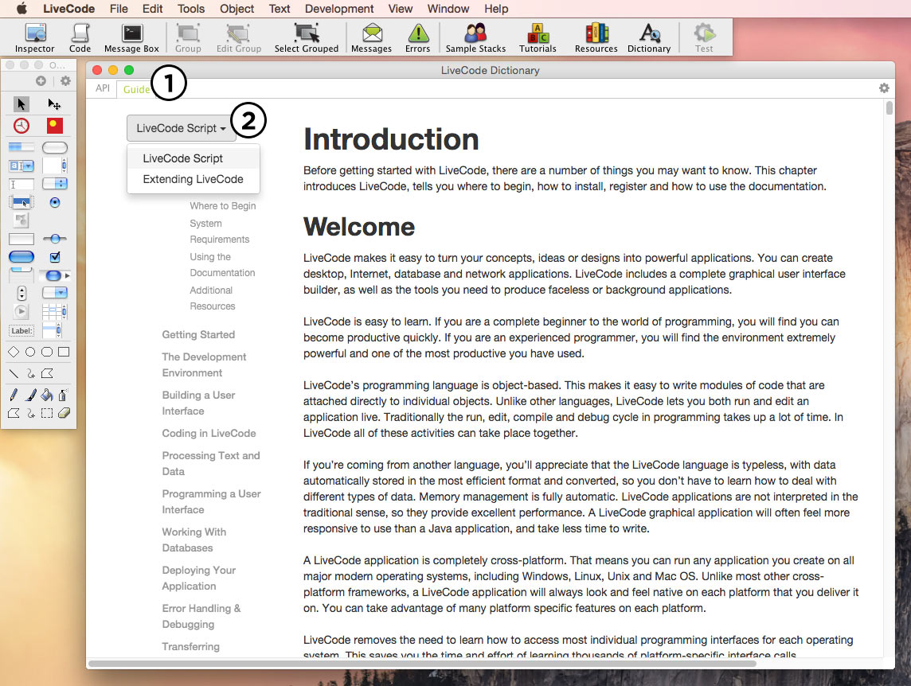
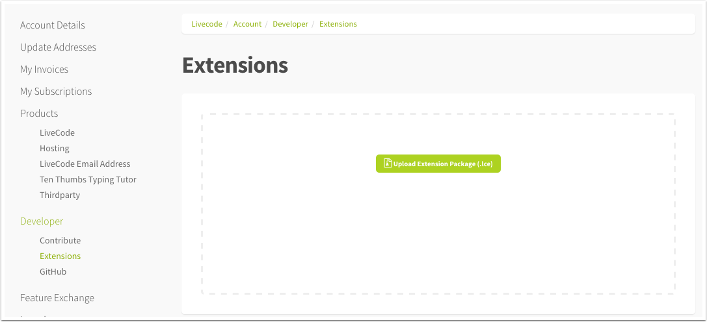
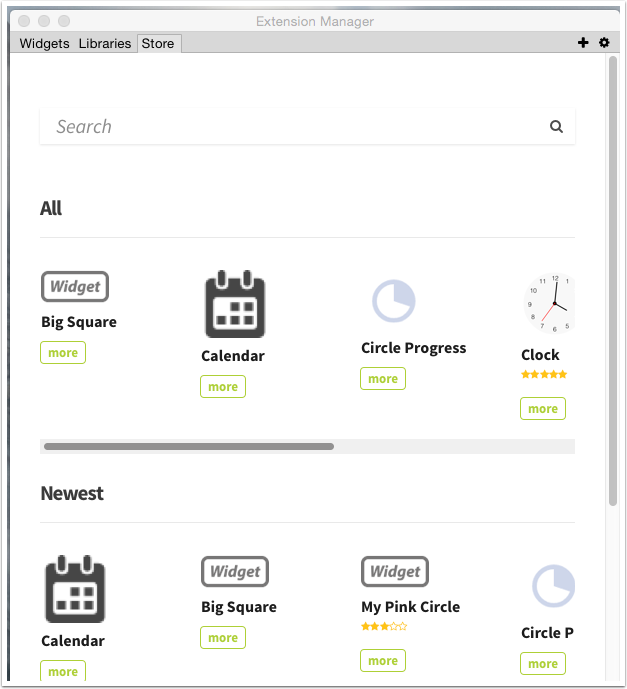

LiveCode 8.0 is the most exciting release in the history of the technology. It provides a simple way to extend the functionality or control set of LiveCode.
Our focus in LiveCode 8.0 is extensibility. You can now build and share widgets (custom controls) and libraries that are treated by LiveCode as engine level elements.
LiveCode 8.0 can be thought of as a version 7.0 with a new module allowing extensions to be plugged into the engine. As a result, 8.0 should be as functional and stable as LiveCode 7.0.
This guide will take you through the process of installing and using these new widgets and libraries and for the adventurous among you, provide a guide to building and sharing your own extensions.
To make it possible to create extensions and plug them into the LiveCode engine we've created a new flavour of our language called LiveCode Builder. LiveCode Builder looks a lot like LiveCode Script so should feel familiar for any seasoned LiveCode developer. There is lots of new syntax which exposes parts of the LiveCode engine that were only previously available to those who were skilled c/c++ developers.
To learn more about LiveCode Builder and creating extensions, read on.
Warning: It is important to stress right at the start that no aspect of LiveCode Builder should be considered final. Every piece of syntax in LiveCode Builder is subject to change.
We have provided a new "Extension Builder" stack to help make development and packaging of extensions as easy as possible.
Note: LiveCode Builder is a different flavour of LiveCode so it is not possible to edit LiveCode Builder scripts in the main LiveCode Script IDE.
Open the "Extension Builder" from the tools menu:
Tools > Extension Builder

Note: A great way to get started is to tweak the script of one of our widget examples.
Using the selection dropdown (1), you can select the extension you wish to develop or click the "open" icon in the header back to locate an extension you've not loaded before.
The main difference between widgets and libraries is that a widget draws to a pre-existing canvas. Apart from that, the authoring process is much the same for both extension types.
We recommend using the Atom text editor, available at https://atom.io/. A LiveCode package is available which provides some colorization as well as indentation. If you prefer to use TextWrangler, there is a colorising script here. It should be placed in /Application Support/TextWrangler/Language Modules/
Start by creating a plain text file in a new directory and save it to disk with the extension "lcb":
/Desktop/widgettest/main.lcb
Note: The extension builder currently relies on there being only one .lcb file in a given directory.
Start by declaring the type of extension, either "widget" or "library" followed by your identifier (See "Select A Developer ID" below).
widget community.livecode.beaumont.pinkCircle
## Code for your widget
end widget
This is the unique identifier by which your extension will be referred to by the LiveCode Engine.
Note: All LiveCode authored widgets are in the application package at /Tools/Extensions/. To play with one of these extensions we recommend copying the folder from the application package to your desktop and loading it from there. Changing the extension identifier in the source code will ensure it doesn't conflict with the existing extension.
Next, provide metadata to help LiveCode display your widget correctly in the IDE and in the online portal.
widget community.livecode.beaumont.pinkCircle
metadata title is "My Pink Circle"
metadata author is "Benjamin Beaumont"
metadata version is "1.0.0"
end widget
The LiveCode builder syntax is broken down into modules. There are 3 classes of module:
| Type | Description |
|---|---|
| Default | These modules are part of LiveCode builder and are included by default. Their syntax is always available to you as a LiveCode developer. |
| Optional | These modules are created and distributed by LiveCode Ltd and must be imported by the extension developer in order to make use of their syntax. |
| Custom | These modules are created and distributed through the online portal and must be imported by the extension developer in order to make use of their syntax. |
LiveCode builder contains the following modules:
| Module | Type | Description |
|---|---|---|
| com.livecode.canvas | Optional | Provides the syntax and types for 2D drawing allowing developers to draw to a canvas. Required if creating a widget. |
| com.livecode.widget | Optional | Contains syntax specific to widget building such as "my width" and "the mouse position". |
| com.livecode.engine | Optional | Contains syntax for all extension building such as "dispatch" and "log". |
| com.livecode.arithmetic | Default | Contains syntax for basic mathematical operations. |
| com.livecode.array | Default | Contains syntax for operations on arrays. |
| com.livecode.binary | Default | Contains syntax for operations on binary data. |
| com.livecode.bitwise | Default | Contains syntax for bitwise logical operators. |
| com.livecode.byte | Default | Contains syntax for operations on byte chunks. |
| com.livecode.char | Default | Contains syntax for operations on char chunks. |
| com.livecode.codeunit | Default | Contains syntax for operations on codeunit chunks. |
| com.livecode.date | Default | Contains syntax for accessing the date and time. |
| com.livecode.file | Default | Contains syntax for file I/O operations. |
| com.livecode.foreign | Default | Provides the type bindings for foreign types. |
| com.livecode.list | Default | Contains syntax for operations on lists. |
| com.livecode.logic | Default | Contains syntax for logical operators. |
| com.livecode.mathfoundation | Default | Contains syntax for foundational mathematical operations. |
| com.livecode.math | Default | Contains syntax for mathematical operations. |
| com.livecode.sort | Default | Contains syntax for sorting operations. |
| com.livecode.stream | Default | Contains syntax for stream I/O operations. |
| com.livecode.string | Default | Contains syntax for operations on strings. |
| com.livecode.system | Default | Contains syntax for accessing system information. |
| com.livecode.type | Default | Contains syntax for general operations on types. |
| com.livecode.typeconvert | Default | Contains syntax for conversions between types. |
| com.livecode.unittest | Default | Contains syntax for unit testing LiveCode Builder programs. |
Warning! Module names are subject to change.
The new LiveCode dictionary has a full list of all available syntax as well as the module each belongs to. As a general rule we recommend importing all three optional module whenever developing widgets.
widget community.livecode.beaumont.pinkCircle
use com.livecode.canvas
use com.livecode.widget
use com.livecode.engine
metadata title is "My Pink Circle"
metadata author is "Benjamin Beaumont"
metadata version is "1.0.0"
end widget
There are three core handlers that any widget developer should implement:
| Handler | Description |
|---|---|
| OnPaint | The OnPaint message is sent to your widget whenever LiveCode requires it to redraw. The performance of your widget is tied primarily to this handler and should be kept as efficient as possible. |
| OnCreate | The OnCreate message is sent to your widget when it is first created by LiveCode. This can be used to initialise default data and where applicable, reduce the burden for calculating constants etc in the onPaint handler. |
| OnGeometryChanged | The OnGeometryChanged message is sent when the control is changed in size. |
| OnSave | The OnSave message is sent when your widget is about to be destroyed and enables the widget to save data set on the widget. |
| OnLoad | The OnLoad message is sent when your widget is created and enables the widget to retrieve data saved on the widget. |
For the most basic example, only the OnPaint() handler is required.
widget community.livecode.beaumont.pinkCircle
metadata title is "My Pink Circle"
metadata author is "Benjamin Beaumont"
metadata version is "1.0.0"
public handler OnPaint()
// Draw widget
end handler
end widget
widget community.livecode.beaumont.pinkCircle
metadata title is "My Pink Circle"
metadata author is "Benjamin Beaumont"
metadata version is "1.0.0"
use com.livecode.canvas
public handler OnPaint()
// Create a path with a radius of half the width of the canvas
// Set the paint to a solid pink color
// Fill the path
variable tCirclePath as Path
put circle path centered at point [my width / 2, my height / 2] with radius (my width/2) into tCirclePath
set the paint of this canvas to solid paint with color [1, 0, 1]
fill tCirclePath on this canvas
end handler
end widget
Now open the extension builder stack as shown above and click on the folder icon at the top right to load your .lcb file into the builder.

Click test. Your widget should be displayed on the new stack. If you can't see it, check behind the extension stack.
In order to make a widget useful to end users it is likely that you'll want to expose properties that allow them to specify how your widget should behave.
To specify a property you must provide a name and the method to get and set the property.
property <name> get <variable/handler> set <variable/handler>
The simplest properties to get/set are numbers or strings. So lets create a circleMargin property that allows users to define a margin.
property circleMargin get mMargin set setMargin
In the above example, when the circleMargin property is requested, the variable "mMargin" is returned, when set, the handler "setMargin" is called. To have LiveCode Builder handle the getting/setting of data, provide the variable name, to take full control over the getting/setting process define handlers. In our case we're taking a mixed approach.
private variable mMargin as Real
We'll define a member variable to store the value for the margin. LiveCode Builder is typed so you must also specify the type of your variable. Remember, the canvas you are drawing to has subpixel precision so our margin can be a decimal number. As a result, we've chosen to specify our margin as a real number. For a full list of types available in LiveCode Builder please see the Typing section of the language specification guide. We also suggest a naming convention for variables in the section on variable and case sensitivity.
We also need to insatiate our circleMargin to a default value. We do this by adding an OnCreate handler which is called when the widget is first created.
public handler OnCreate()
put 0 into mMargin
end handler
Finally we have to implement our setMargin handler.
public handler setMargin(in pMargin as Real) returns nothing
put pMargin into mMargin
redraw all
end handler
Implementing the "setter" ourselves provides us with a little more flexibility. In this case when the property is set we want our pink circle to immediately redraw to reflect the property change. We do this by calling "redraw all".
To test the property click "test" and from the message box set the property.
set the cicleMargin of widget 1 to 15
Full Example
widget community.livecode.beaumont.pinkCircle
metadata title is "My Pink Circle"
metadata author is "Benjamin Beaumont"
metadata version is "1.0.0"
use com.livecode.canvas
use com.livecode.widget
use com.livecode.engine
// Properties
property circleMargin get mMargin set setMargin
// Local variables
private variable mMargin as Real
public handler onCreate()
put 0 into mMargin
end handler
public handler OnPaint()
// Create a path with a radius of half the width of the canvas
// Set the paint to a solid pink color
// Fill the path
variable tCirclePath as Path
put circle path centered at point [my width / 2, my height / 2] with radius ((my width - mMargin)/2) into tCirclePath
set the paint of this canvas to solid paint with color [1, 0, 1]
fill tCirclePath on this canvas
end handler
public handler setMargin(in pMargin as Real)
put pMargin into mMargin
redraw all
end handler
end widget
When your widget is created you are sent an OnSave message. It has the following structure and expects and array return type. You can fill this array with whatever widget data you have. LiveCode saves this data along with instances of the widget in the stack file.
public handler OnSave(out rProperties as Array)
put the empty array into rProperties
put mMargin into rProperties["margin"]
return rProperties
end handler
This same array will be returned to you when the widget is next opened.
public handler OnLoad(in pProperties as Array)
put pProperties["margin"] into mMargin
end handler
Clicking on the "test" button causes the extension builder to compile your source code file (***.lcb***) and produce a compiled module file (***.lcm***). If an error is encountered it is output in the "console" section of the builder:
Error: <source path>: <line number>: <char number>: <error message>
To start creating more complex widgets see the LiveCode Builder api in the documentation stack in the IDE.

A extension library is written in much the same way as the above widget. The only difference is that all the public handlers implemented are loaded into the engine on startup.
To load a compiled library file call:
load extension <filepath.lcm>
To create a widget from script call:
create widget <name> as <identifier>
e.g.
create widget "myWidget" as "com.livecode.extensions.waddingham.clock"
Widgets can either be 'host' widgets, as in the previous example, created when a widget is directly embedded in a stack, or 'child' widgets which are created when a widget is used as a child widget within another widget. The syntax for composed widgets is included in the com.livecode.widget module.
This composed widget example composes the clock widget and the selector widget, to create a version of the clock widget with adjustable time zone.  The label at the top of the widget reflects which portion of the widget the mouse is over.
widget com.livecode.extensions.example.simplecomposed
use com.livecode.canvas
use com.livecode.widget
metadata title is "Simple Composed Widget"
metadata author is "LiveCode"
metadata version is "1.0.0"
private variable mInsideChild as String
private variable mInside as Boolean
private variable mSelector as Widget
private variable mClock as Widget
public handler OnCreate()
put false into mInside
put the empty string into mInsideChild
put a new widget "com.livecode.extensions.livecode.selector" into mSelector
set property "numSelections" of mSelector to 6
set annotation "Name" of mSelector to "Selector"
put a new widget "com.livecode.extensions.livecode.clock" into mClock
set annotation "Name" of mClock to "Clock"
place mSelector
place mClock
end handler
end widget
Notice that Widget is a variable type. This widget stores references to its child widgets
in private variables. In the OnCreate handler, the widget objects are created, stored
in the private variables and 'placed'. Child widgets can be stored as variables and
manipulated without actually being drawn to a canvas if they are unplaced.
Properties implemented by child widgets can be got and set using the
property <propName> of <child widget> syntax.
Placing a widget ensures that they are drawn, in placement order. Setting an annotation of
a child widget assigns it a tag so that when an unknown child widget is returned by an
operator, its annotation can be used to identify it.
public handler OnMouseEnter()
put true into mInside
if the target is not nothing then
put annotation "Name" of the target into mInsideChild
end if
redraw all
end handler
public handler OnMouseLeave()
if the target is not nothing then
put the empty string into mInsideChild
end if
put false into mInside
redraw all
end handler
In the OnMouseEnter and OnMouseLeave handlers, the target is used to obtain a
reference to the child widget that triggered the OnMouseEnter and OnMouseLeave events,
and the previously assigned annotation put into the mInsideChild variable, which in turn
is rendered to the canvas in the OnPaint handler.
public handler OnPaint()
set the paint of this canvas to solid paint with color [0.75, 0.75, 0.75]
fill rectangle path of my bounds on this canvas
if mInside then
set the paint of this canvas to solid paint with color [1.0, 0.0, 0.0]
set the stroke width of this canvas to 4.0
stroke rectangle path of my bounds on this canvas
end if
if mInsideChild is not the empty string then
set the paint of this canvas to solid paint with color [0.0, 0.0, 0.0]
fill text mInsideChild at top of my bounds on this canvas
end if
end handler
The rectangle of each child widget is controlled using the following syntax:
* the rectangle of <widget> - Enables manipulation of the rectangle property of a child widget.
* the width of <widget> - Enables manipulation of the width property of a child widget.
* the height of <widget> - Enables manipulation of the height property of a child widget.
* the location of <widget> - Enables manipulation of the location property of a child widget.
public handler OnGeometryChanged()
set the rectangle of mSelector to rectangle [ 0, 20, my width, 50 ]
set the rectangle of mClock to rectangle [ 0, 50, my width, my height ]
end handler
Finally, messages posted by child widgets can be handled in the direct parent by handling the appropriate message (prepending 'On'). For example, the selector widget posts optionChanged when one of its numbers is selected. This is handled by this composed widget example in an OnOptionChanged handler.
public handler OnOptionChanged(in pIndex)
set property "timeZone" of mClock to pIndex - 1
end handler
Extensions can provide an API (Dictionary) and User Guide as part of the installed package. They are installed and viewable through the LiveCode Dictionary stack.
API (Dictionary)

User Guide

Note: In LiveCode 8.0 we'll be including an updated version of the LiveCode Script User Guide. The version currently included with LiveCode has not yet been updated.
Any extension can include an API. To do so, either add a file called api.lcdoc to your widget folder alongside the other widget files or markup your source code inline.
Marking up your scripts is simple and follows a similar model to other documentation formats.
Consider the following handler
public handler myHandler(in pString as String, in pNumber as Number)
# Code
end handler
To add an entry to the API for this handler, place a formatted comment above the handler definition:
/*
summary: Use this handler to do an action
pString: This parameter does x
pNumber: This parameter does y
description:
# Markdown Title
Here is a full description in markdown for how this function works. Once again, any GitHub
flavoured markdown is accepted.
*/
public handler myHandler(in pString as String, in pNumber as Number)
# Code
end handler
The LiveCode API parser will combine the comment items with other data pulled directly from your handler definition such as name, type and some parameter details.
For a full list of acceptable documentation elements please see the LiveCode Documentation Format guide.
Important: Documentation is only added to the LiveCode dictionary when a full extension package is installed. Currently, this is only possible through the extension builder.
Any extension can include a user guide. To do so, add a markdown file called guide.md to your widget folder alongside the other widget files.
All GitHub flavoured markdown is accepted.
Packaging extensions is easy. Simply open the "Extension Builder" stack:
Tools > Extension Builder
Load your .lcb file and click "Build Package". A new file will appears in the same directory as your main file with the extension .lce. This is your final package file ready for upload to the extensions portal.
A valid package can be built from a minimum set of files:
widget.lcb // Widget source file
support/icon.png // 20x40 png image
support/icon@extra-high.png // 40x80 png image
Once you have created and packaged your extension you can make it available to the LiveCode Community via the Extension Store, in the widgets section.
The first step is to register as an Extension Developer.
LiveCode Extensions must have unique identifiers. These identifiers use reverse domain notation.
You can sign up on this page for a LiveCode Community Developer ID. Having a developer ID will allow you to use extension identifiers of the form: community.livecode.developerID.extensionName.
Choose the Developer ID you want to use here. If your chosen ID is already in use you will be asked to choose a different one.
To upload a packaged extension to the store log in to your LiveCode account and go to the Extensions section of the Developer area.
Any extensions you have uploaded will be shown here, and you have the option to add new extensions.
.lce) file into the upload area
When an extension is first uploaded it is not active so will not show in the Extension Store.
To activate your extension click "activate" under Status. At this stage you will be warned if any information is missing and you can add it by clicking the "Edit" button.

Once your extension is activated its status will change to "Active".
You can view and downlaod extensions via the Extension Store. To see the extensions that are available to download open the Extension Manager from the LiveCode Tools menu and select the "Store" tab.

You can also download extensions from the Widget Store on the LiveCode website then install the downloaded extension using the Extension Manager.
There are many other ways to extend LiveCode. This section explains how to run shell commands, start other applications, read and write to processes, execute AppleScript, VBScript, send and respond to AppleEvents and communicate between multiple LiveCode-based processes. It also tells you where to get information to create external commands and functions (code written in lower level languages).
Use the shell function to run shell commands and return the result. The following example displays a directory listing on Mac OS X:
answer shell("ls")
And this example stores a directory listing in a variable on Windows:
put shell("dir") into tDirectory
On Windows systems you can prevent a terminal window from being displayed by setting the hideConsoleWindows global property to true.
You can choose a different shell program by setting the shellPath global property. By default this is set to "/bin/sh" on Mac OS X and Linux and "command.com" on Windows.
Tip: The shell function blocks LiveCode until it is completed. If you want to run a shell command in the background, write the shell script to a text file then execute it with the
launchcommand.
Use the launch command to launch other applications, documents or URLs. To launch an application, supply the full path to the application. The following example opens a text document with TextEdit on OS X:
launch "/Users/someuser/Desktop/text document.rtf" with "/Applications/TextEdit.app"
Tip: To get the path to an application, use the
answer filecommand to select the application then copy it into your script. Run this in the message box:answer file "Select an application"; put it
To open a document with the application it is associated with use the launch document command.
launch document "C:/My document.pdf"
To open a URL in the default web browser, use the launch URL command.
launch URL "<http://www.livecode.com/>"
For more information on launching URLs and details on how to render web pages within LiveCode, see the Transferring Information guide.
Use the kill process command to send a signal to another application, to close it or to force it to exit. For more details, see the LiveCode Dictionary.
Use the open process command to open an application or process you want to read and write data from. You can then read from the process with the read from process command and write to it with the write to process command. To close a process you have opened, use the close process command. The openProcesses returns a list of processes you have opened and the openProcessIDs returns the process IDs of each one. For more details see the LiveCode Dictionary.
To execute commands using AppleScript on Mac OS or VBScript on Windows, use the do as command. do as also allows you to use any other Open Scripting Architecture languages on Mac OS or languages installed into the Windows Scripting Host on Windows. To retrieve a list of the available installed languages, use the alternateLanguages.
For example, to execute an AppleScript that brings the Finder on OS X to the front, enter the following into a field:
tell application "Finder" activate end tell
Then run:
do field 1 as "appleScript"
To retrieve a result from commands executed using do as, use the result function. Any
error message will also be returned in the result. The following example displays
the result of an addition performed using VBScript:
do "result = 1 + 1" as "vbscript"
answer the result
For more information on the do as command, see the LiveCode Dictionary.
To send an AppleEvent, use the send to program command.
If LiveCode receives an AppleEvent it will send an appleEvent message to the current card. Intercept this message to perform actions such as handling a request to quit your application or opening a document. The following example shows how you could handle a request to quit:
on appleEvent pClass, pID, pSender
if pClass & pID is "aevtquit" then
-- call a function that prompts the user to save changes
put checkSaveChanges() into tOkToQuit
-- returns false if the user presses "cancel"
if tOkToQuit is true then quit
else exit appleEvent
end if
end appleEvent
To retrive additional information passed with the appleEvent use the request appleEvent data command. The following example shows how you could handle a request to open a stack:
on appleEvent pClass, pID, pSender
--appleEvent sent when stack is opened from the finder
if pClass & pID is " aevtodoc " then
-- get the file path(s)
request AppleEvent data
put it into tFilesList
repeat for each line l in tFilesList
go stack l
end repeat
end if
end appleEvent
For more details see the LiveCode Dictionary.
If you want to communicate between local applications a common technique that can be used without code changes on all the platforms LiveCode supports, is to open a local socket and communicate using that. You should choose a port number that is not used by a standard protocol – typically a high number.
This technique is commonly used when you want to create multiple programs that run independently but communicate with each other. It is a viable technique for running background tasks and provides a straightforward way to create an application that behaves as if threaded – i.e. with benefits of multiple threads. You can design your application such that additional instances can be launched to perform processing, data transfer or other intensive activities. Modern OSes will allocate each application to an appropriate processor core. By using socket messaging to communicate with each one you can keep your main application's user interface responsive and display status information. The following example shows you how to open a socket to the local machine:
open socket to "127.0.0.1:10000" with message gotConnection
A detailed discussion of how to create a protocol using sockets can be found in the Transferring Information guide.
Tip: To simplify communication between multiple LiveCode programs, consider writing a simple library that sends and receives a handler name together with parameter data. To call a handler in the other LiveCode program, send the handler name and data to the library. The library will send the data over a socket. In the receiving program intercept the incoming data from the socket and use it to call the appropriate message with the parameter data received.
LiveCode provides an external interface which allows you to extend it using a lower level language (often C). For example, if you have preexisting code that performs processing in a lower level language, you can write a user interface in LiveCode and then call this library by writing a simple wrapper around it using LiveCode's externals interface. LiveCode supports transmitting data to and from externals, as well as drawing into image objects within LiveCode windows, manipulating the player object, and more.
Note: Some aspects of the built in functionality are supplied in the form of externals. These include the SSL library, the database library, the revBrowser library, zip library, video grabber and XML libraries. These libraries can be included in a standalone application, or excluded if they are not needed – saving disk space.
We provide a developer kit for writing externals which includes documentation and examples. You may download this kit from:
http://downloads.runrev.com/resources/externals/revexternalssdk.zip
The following newsletter articles will also help you get started: